Urbano-Final¶
Meta¶
Generar las condiciones, en todas sus vertientes, para el desarrollo urbano en Yucatán, de manera que se fomente la descentralización, se aprovechen las zonas con infraestructura y se contenga la expansión urbana en la zona metropolitana de Mérida.
1. Urbano¶
1.1 Modelo de decisión¶
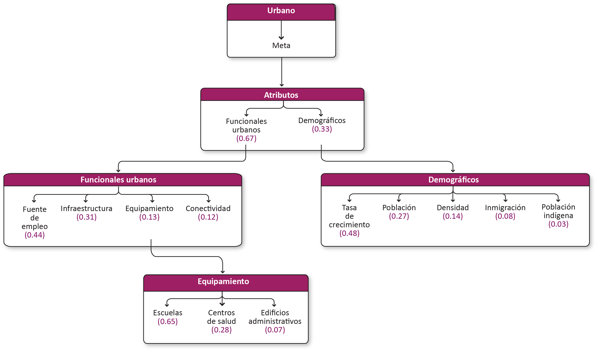
1.2 Atributos¶
1.2.1 Funcionales urbanos¶
Atributos funcionales urbanos que determinan el crecimiento de asentamientos humanos.
| Atributos | Definición |
|---|---|
| Fuente de empleo | Distancia a las fuentes de empleo. |
| Infraestructura | Cobertura de las redes de agua potable y energía eléctrica. |
| Equipamiento | Elementos que pueden dar servicios a la población: centros de salud, escuelas, edificios administrativos, transportes, correos y almacenamiento. |
| Conectividad | Vinculación de asentamientos a través de la infraestructura vial. |
1.2.1.1 Fuente de empleo¶
Distancia a las fuentes de empleo.
Insumos
| Capa | Unidades económicas totales |
|---|---|
| Fuente | [1] Polígonos de localidades. Marco Geoestadístico. Censo de Población y Vivienda INEGI y [2] Datos de indicador. Directorio Estadístico Nacional de Unidades Económicas (DENUE) INEGI |
| Año | 2020 |
| Escala | Localidad |
| Unidades | Número |
Parámetros de la función de valor
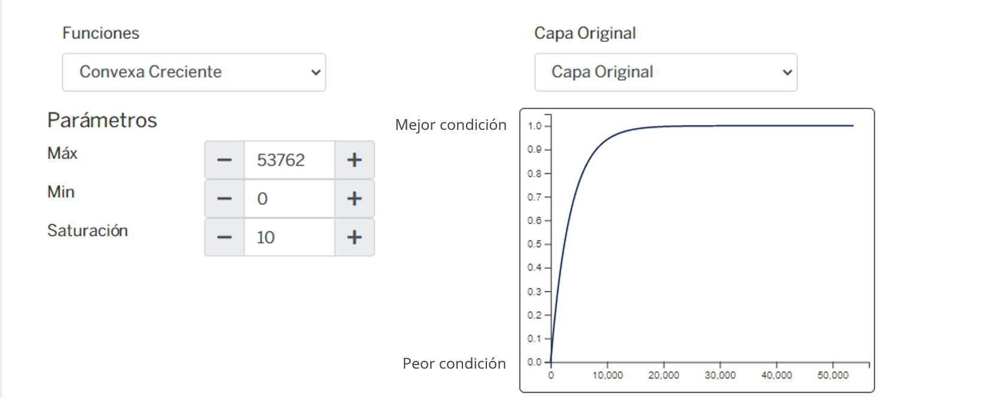
Función de valor de fuente de empleo
1.2.1.2 Infraestructura¶
Cobertura de las redes de agua potable y energía eléctrica.
Insumos
| Capa | Viviendas totales con agua entubada, drenaje y energía eléctrica |
|---|---|
| Fuente | [1] Polígonos de localidades. Marco Geoestadístico. Censo de Población y Vivienda INEGI y [2] Datos de indicador. Censo de Población y Vivienda. Principales resultados por localidad (ITER) INEGI |
| Año | 2020 |
| Campo | [2] VIVTOT y VPH_C_SERV |
| Escala | Localidad |
| Unidades | Porcentaje |
Parámetros de la función de valor
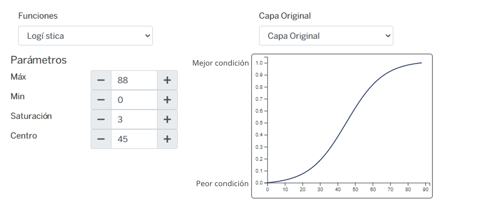
Función de valor de infraestructura
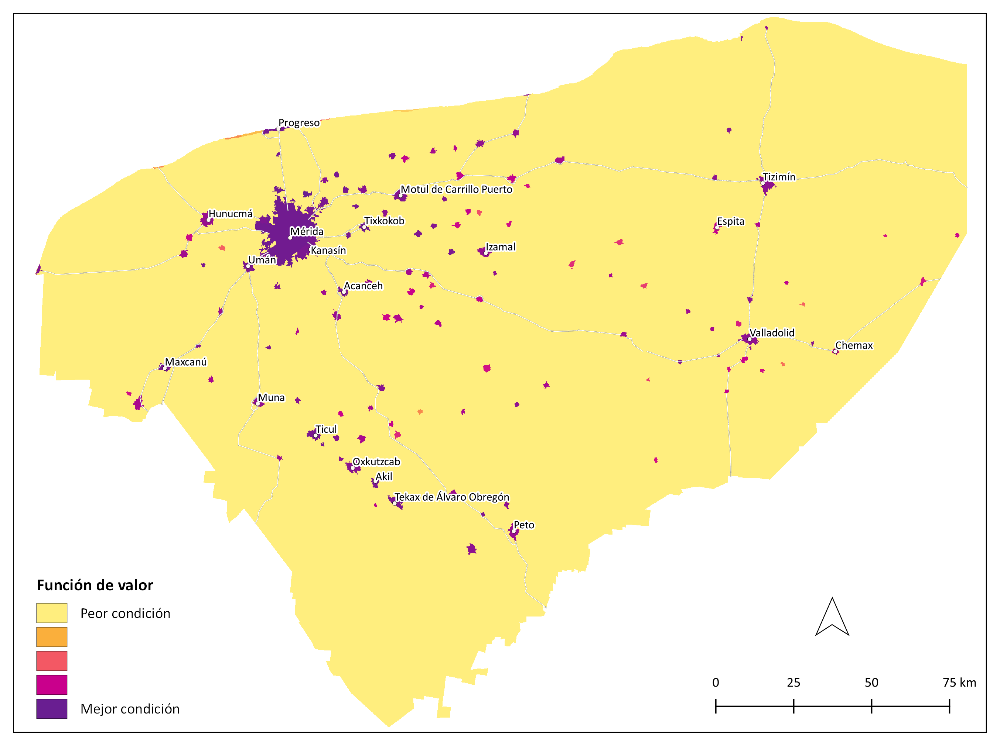
1.2.1.3 Equipamiento¶
Elementos que pueden dar servicios a la población: centros de salud, escuelas, edificios administrativos, transportes, correos y almacenamiento.
| Atributo | Definición |
|---|---|
| Escuelas | Número total de instituciones educativas de nivel medio técnico, medio superior y superior. |
| Centros de salud | Número total de centros de salud. |
| Edificios administrativos | Unidades totales, incluye actividades legislativas gubernamentales. |
1.2.1.3.1 Escuelas¶
Número total de instituciones educativas de nivel medio técnico, medio superior y superior.
Insumos
| Capa | Unidades económicas de escuelas |
|---|---|
| Fuente | [1]Polígonos de localidades. Marco Geoestadístico. Censo de Población y Vivienda INEGI y [2] Datos de indicador. Directorio Estadístico Nacional de Unidades Económicas (DENUE) INEGI |
| Año | 2020 |
| Escala | Localidad |
| Unidades | Número |
Parámetros de la función de valor
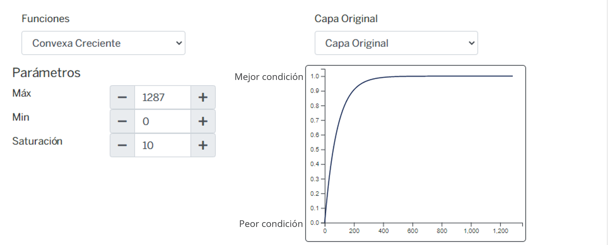
Función de valor de escuelas
1.2.1.3.2 Centros de salud¶
Número total de centros de salud.
Insumos
| Capa | Unidades económicas de centros de salud |
|---|---|
| Fuente | [1] Polígonos de localidades. Marco Geoestadístico. Censo de Población y Vivienda INEGI y [2] Datos de indicador. Directorio Estadístico Nacional de Unidades Económicas (DENUE) INEGI |
| Año | 2020 |
| Escala | Localidad |
| Unidades | Número |
Parámetros de la función de valor
Función de valor de centros de salud
1.2.1.3.3 Edificios administrativos¶
Unidades totales, incluye actividades legislativas gubernamentales.
Insumos
| Capa | Unidades económicas de edificios administrativos |
|---|---|
| Fuente | [1] Polígonos de localidades. Marco Geoestadístico. Censo de Población y Vivienda INEGI y [2] Datos de indicador. Directorio Estadístico Nacional de Unidades Económicas (DENUE) INEGI |
| Año | 2020 |
| Escala | Localidad |
| Unidades | Número |
Parámetros de la función de valor
Función de valor de edificios administrativos
1.2.1.4 Conectividad¶
Vinculación de asentamientos a través de la infraestructura vial.
Insumos
| Capa | Conectividad |
|---|---|
| Fuente | [1] Polígonos de localidades. Marco Geoestadístico. Censo de Población y Vivienda INEGI y [2] Carreteras: Conjunto de datos vectoriales de información topográfica por Entidad Federativa Serie V (carretera_l) INEGI |
| Año | [1]2020; [2]2018 |
| Unidades | Adimensional |
Método para obtener los parámetros de la función de valor
El atributo de conectividad se calculó con base en los siguientes indicadores:
| Indicador | Definición | Conectividad | FV |
|---|---|---|---|
| Localidades cercanas a ciudades | Ubicadas a <= 5 km de una localidad de <= 15 mil habitantes | Muy alta | 1.00 |
| Localidades cercanas a centros de población mixtos o en transición | Ubicadas a <= 2.5 km de una localidad de entre 2,500 y 15 mil habitantes | Moderada | 0.66 |
| Localidades cercanas a carreteras | Ubicadas a <= 3 km de un camino transitable todo el año | Baja | 0.33 |
| Localidades aisladas | El resto de las localidades | Muy baja | 0.00 |
Función de valor de conectividad
1.2.2 Demográficos¶
| Atributos | Definición |
|---|---|
| Tasa crecimiento | Tasa de crecimiento poblacional 10 años (2010-2020). |
| Población | Número de habitantes. |
| Densidad | Número de habitantes por hectárea. |
| Inmigración | Porcentaje de la población total nacida fuera de la entidad o país. |
| Población indígena | Porcentaje de la población índígena en el asentamiento. |
1.2.2.1 Tasa de crecimiento¶
Tasa de crecimiento poblacional 10 años (2010-2020).
Insumos
| Capa | Tasa de crecimiento |
|---|---|
| Fuente | [1] Polígonos de localidades. Marco Geoestadístico. Censo de Población y Vivienda INEGI y [2] Datos de indicador. Censos de Población y Vivienda. Principales resultados por localidad (ITER) INEGI |
| Año | [1] 2020; [2] 2010 y 2020 |
| Campo | [2] POBTOT |
| Escala | Localidad |
| Unidades | Porcentaje |
Parámetros de la función de valor
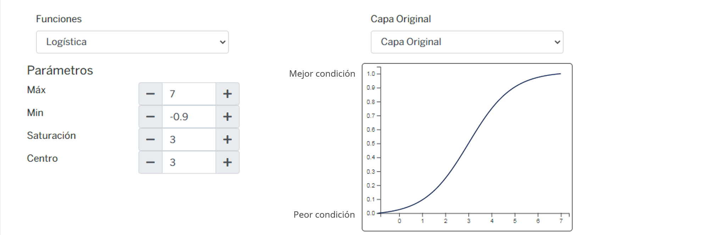
Función de valor de tasa de crecimiento
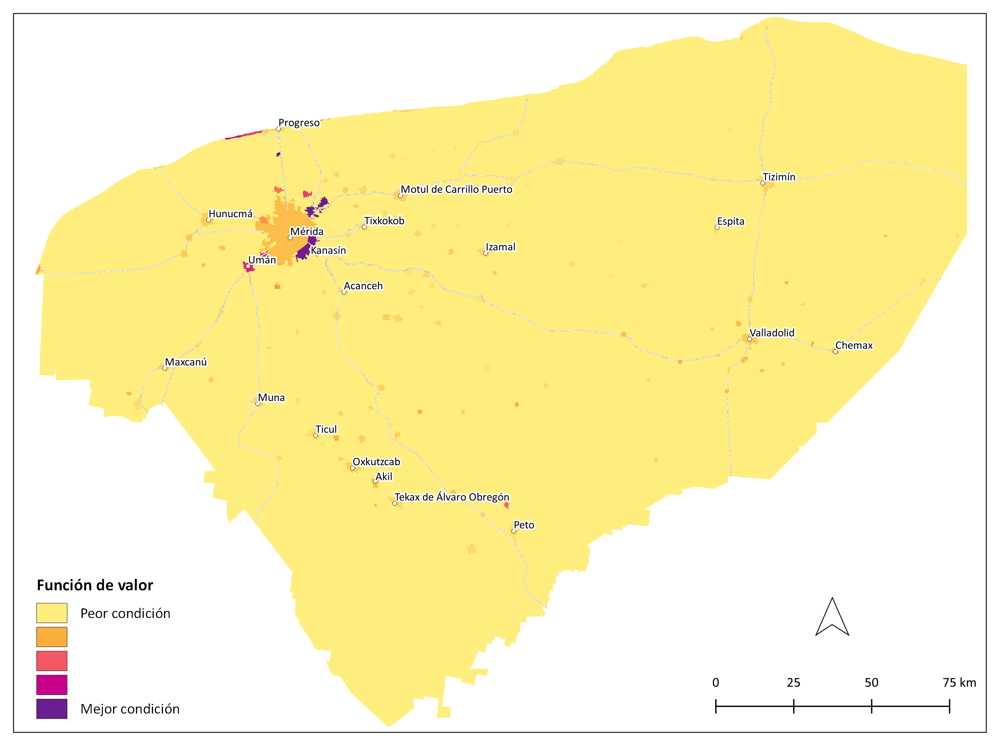
1.2.2.2 Población¶
Número de habitantes.
Insumos
| Capa | Tamaño poblacional |
|---|---|
| Fuente | [1] Polígonos de localidades. Marco Geoestadístico. Censo de Población y Vivienda INEGI y [2] Datos de indicador. Censo de Población y Vivienda. Principales resultados por localidad (ITER) INEGI |
| Año | 2020 |
| Campo | [2] POBTOT |
| Escala | Localidad |
| Unidades | Número de habitantes |
Parámetros de la función de valor
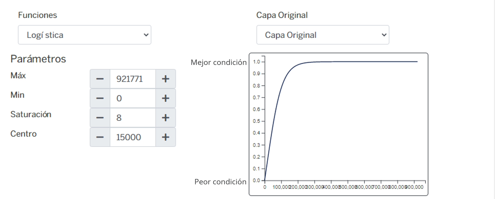
Función de valor de población
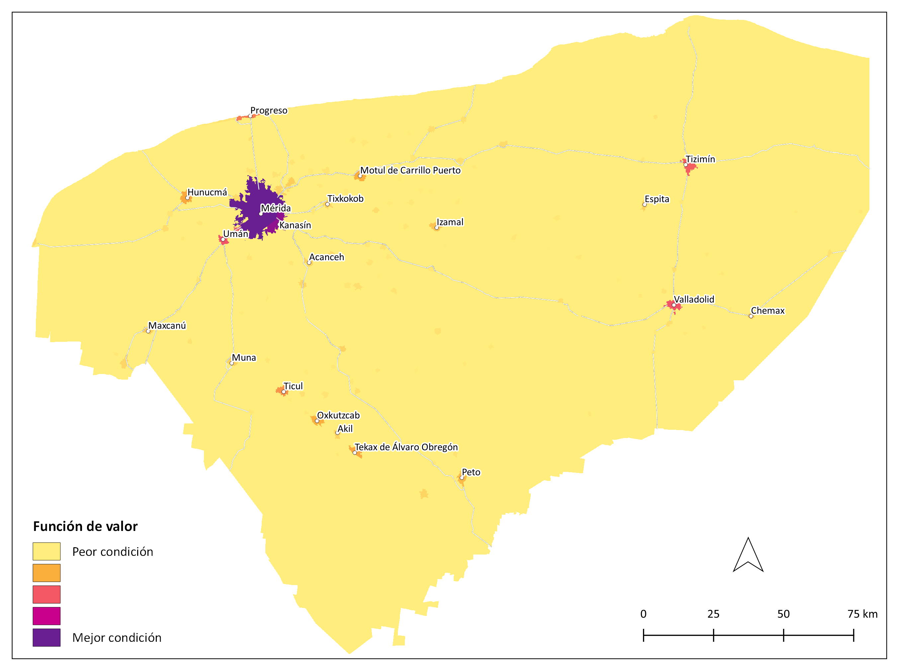
1.2.2.3 Densidad¶
Número de habitantes por hectárea.
Insumos
| Capa | Densidad de población |
|---|---|
| Fuente | [1] Polígonos de localidades. Marco Geoestadístico. Censo de Población y Vivienda INEGI y [2] Datos de indicador. Censo de Población y Vivienda. Principales resultados por localidad (ITER) INEGI |
| Año | 2020 |
| Campo | [2] POBTOT |
| Escala | Localidad |
| Unidades | Número de habitantes/hectárea |
Parámetros de la función de valor
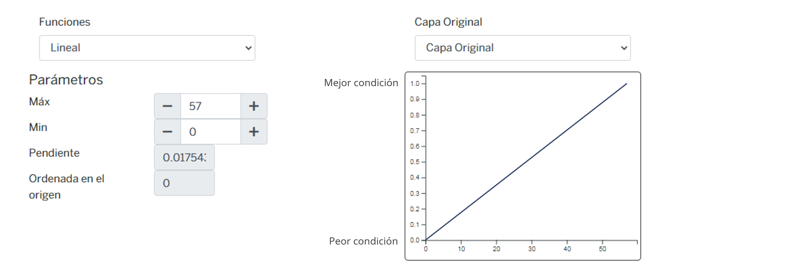
Función de valor de densidad
1.2.2.4 Inmigración¶
Porcentaje de la población total nacida fuera de la entidad o país.
Insumos
| Capa | Inmigración |
|---|---|
| Fuente | [1] Polígonos de localidades. Marco Geoestadístico. Censo de Población y Vivienda INEGI y [2] Datos de indicador. Censo de Población y Vivienda. Principales resultados por localidad (ITER) INEGI |
| Año | 2020 |
| Campo | [2] POBTOT y PNACOE |
| Escala | Localidad |
| Unidades | Porcentaje |
Parámetros de la función de valor
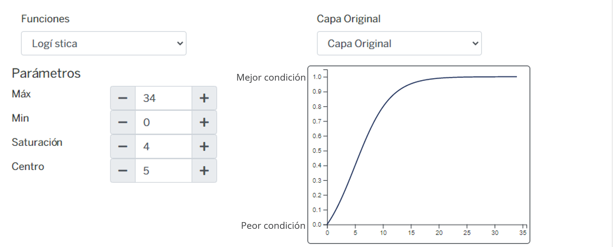
Función de valor de inmigración
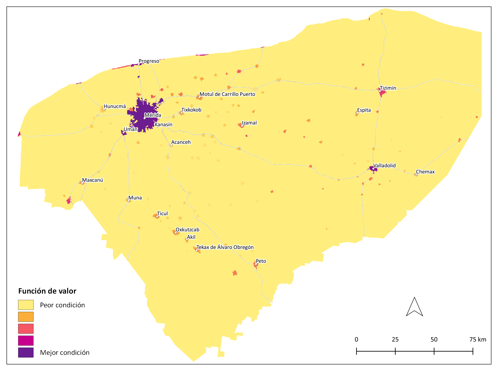
1.2.2.5 Población indígena¶
Porcentaje de la población índígena en el asentamiento.
Insumos
| Capa | Población indígena |
|---|---|
| Fuente | [1] Polígonos de localidades. Marco Geoestadístico. Censo de Población y Vivienda INEGI y [2] Datos de indicador. Censo de Población y Vivienda. Principales resultados por localidad (ITER) INEGI |
| Año | 2020 |
| Campo | [2] POBTOT y P3YM_HLI |
| Escala | Localidad |
| Unidades | Porcentaje |
Parámetros de la función de valor
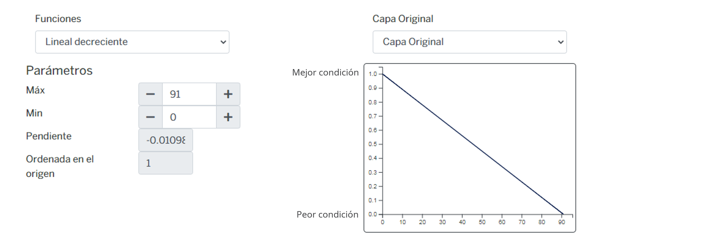
Función de valor de población indígena
1.3 Mapa de aptitud¶
1.3.1 Priorización de polos de crecimiento¶
1.3.2 Crecimiento urbano orgánico¶
Insumo
| Capa | Distancia a localidades |
|---|---|
| Fuente | [1] Polígonos de localidades. Marco Geoestadístico. Censo de Población y Vivienda INEGI y [2] Red Nacional de Caminos (RNC) Red vial - INEGI |
| Año | [1] 2020; [2] 2019 |
| Escala | Sin dato |
| Unidades | Kilómetros |
Parámetros de la función de valor
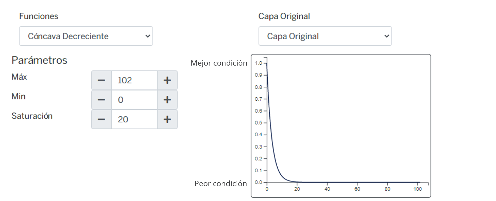
Función de valor de crecimiento urbano orgánico
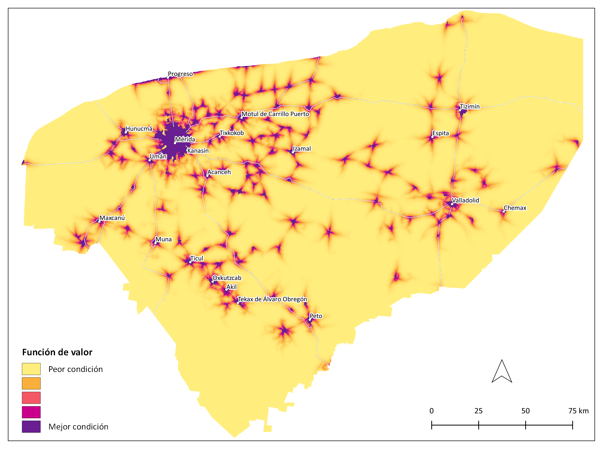
1.3.3 Zona de aprovechamiento actual del sector urbano¶
Insumos
| Capa | Asentamientos humanos y polígonos de localidades urbanas |
|---|---|
| Fuente | [1] Polígonos de localidades. Marco Geoestadístico. Censo de Población y Vivienda INEGI y [2] Conjunto de datos vectoriales de la carta de Uso del suelo y vegetación. Serie VI. Conjunto Nacional INEGI |
| Año | [1] 2020; [2] 2017 |
| Escala | [1] Sin dato; [2] 1:250,000 |
| Unidades | Adimensional |
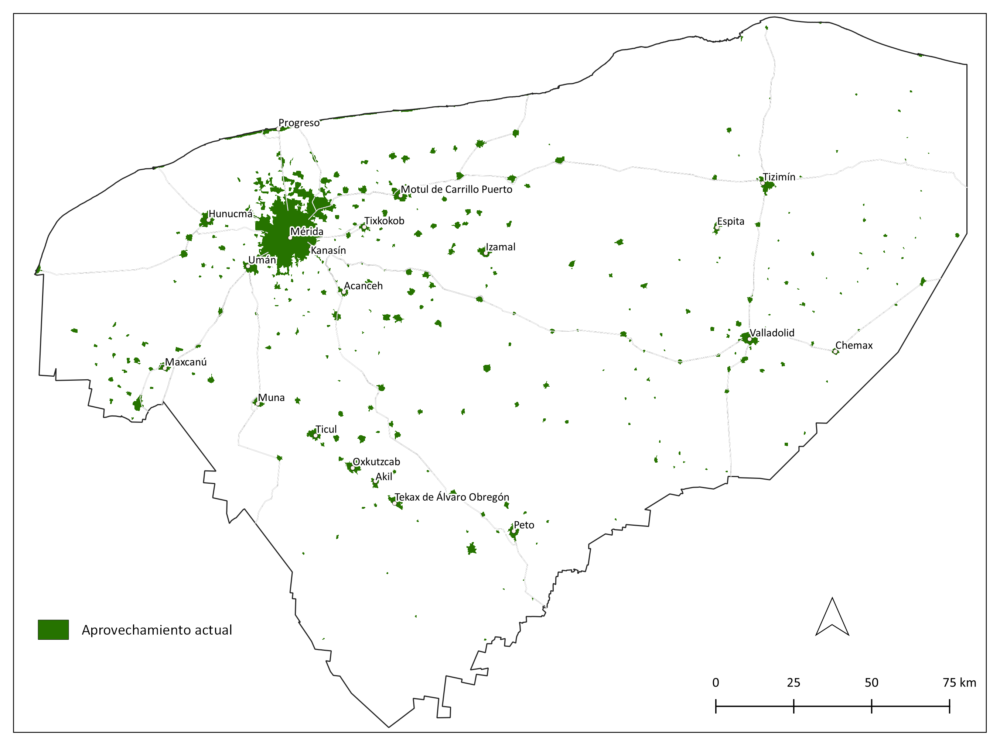
1.3.4 Zonas de exclusión¶
Insumos
| Capa | Humedales |
|---|---|
| Fuente | Modelo Cartográfico de Humedales INEGI |
| Año | 2014 |
| Escala | 1:50,000 |
| Unidades | Adimensional |
Tabla de exclusión del sector urbano
| ID | Cobertura |
|---|---|
| 6 | Estero |
| 9 | Laguna costera |
| 12 | Marisma |
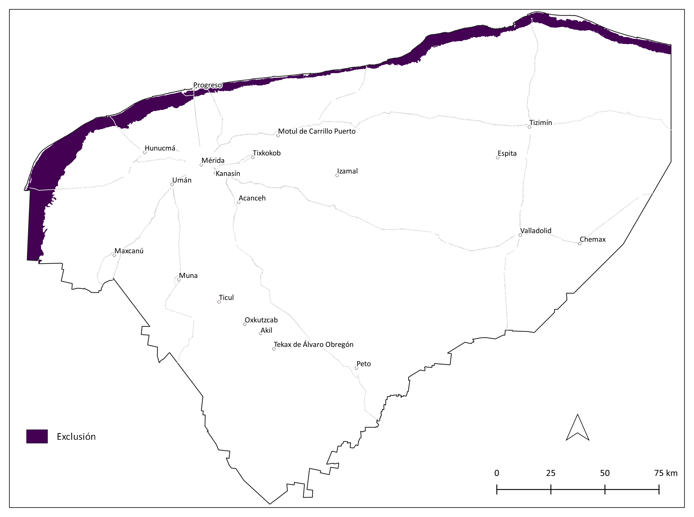
1.3.5 Reservas territoriales urbanas¶
Este mapa se actualizará para incluir como aptitud muy alta los póligonos de reserva territorial incluidos en los programas de desarrollo urbano y vivienda del estado.
1.3.6 Mapa de aptitud urbano¶
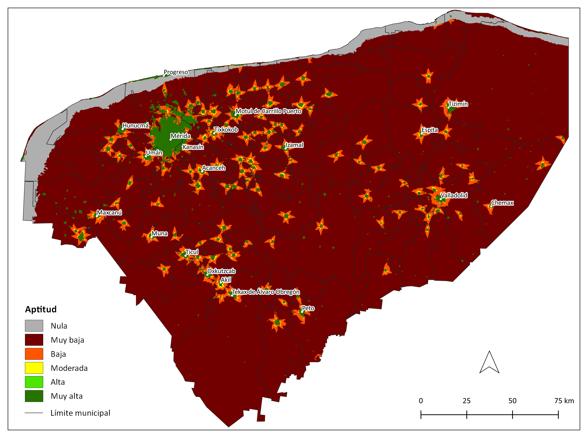
Pesos globales del modelo de aptitud urbano
| Criterio | Peso |
|---|---|
| Fuentes de empleo | 0.295 |
| Infraestructura | 0.208 |
| Tasa de crecimiento | 0.158 |
| Población | 0.089 |
| Conectividad | 0.080 |
| Escuelas | 0.057 |
| Densidad | 0.043 |
| Inmigración | 0.030 |
| Centros de salud | 0.024 |
| Población indígena | 0.010 |
| Edificios administrativos | 0.006 |
Área por categoría de aptitud
| Categoría | km² | Porcentaje del estado |
|---|---|---|
| Muy alta | 1060.3 | 3 |
| Alta | 0.0 | 0 |
| Moderada | 192.6 | 0 |
| Baja | 2232.1 | 6 |
| Muy baja | 34359.5 | 87 |
| Nula | 1692.2 | 4 |
1.3.7 Sensibilidad de atributos ambientales¶
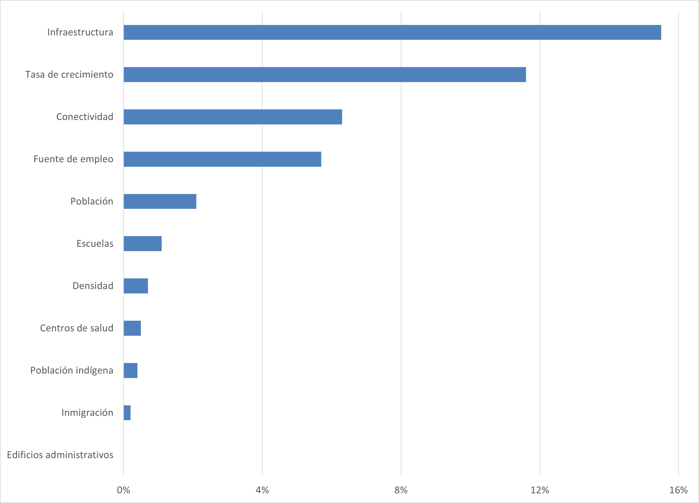